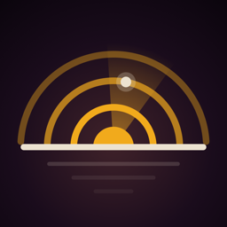
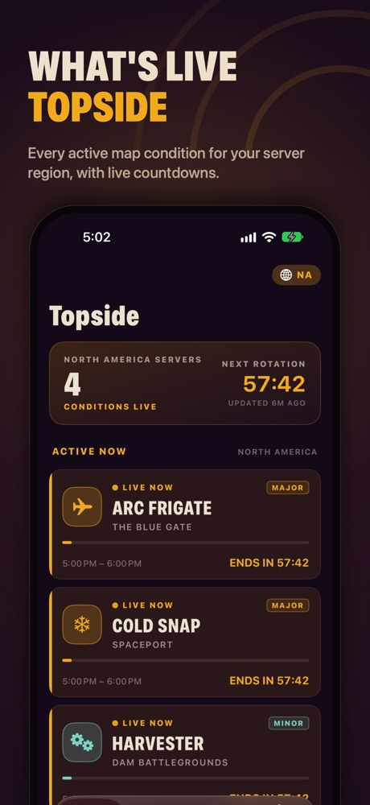
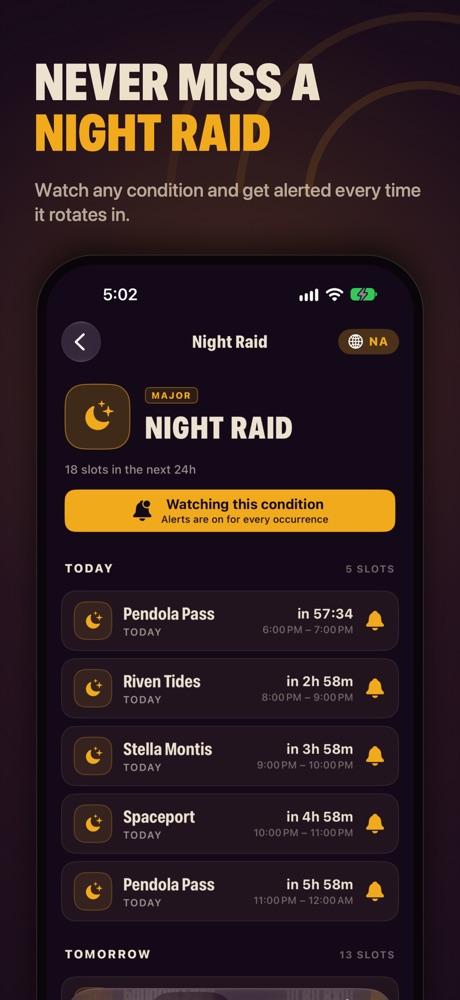
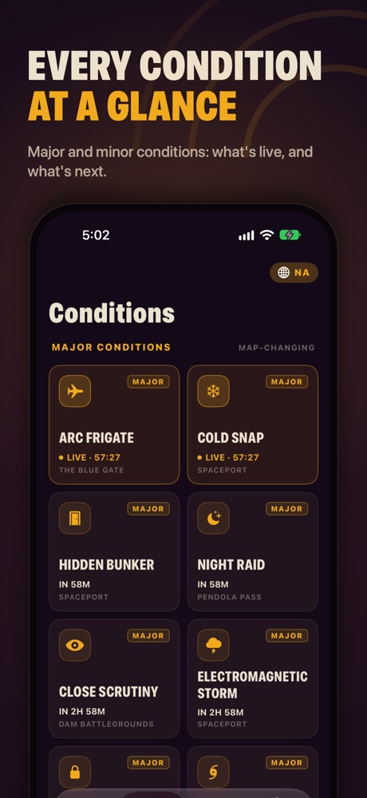
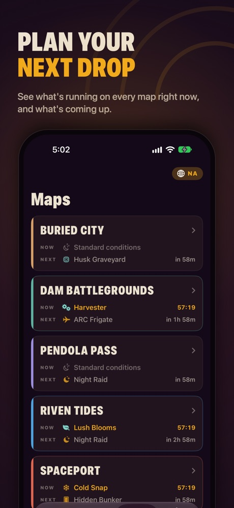

Topside
ARC Raiders map conditions & alerts
Know what's live before you drop. Live map conditions for every region, countdowns to what's next, and alerts the moment Night Raid hits.




Features
- Live now Every active condition with a countdown to when it ends and which maps it's on.
- Coming up The next occurrence of every condition, with one-tap alerts.
- Watch Follow a condition or a whole map and get notified before every occurrence.
- Regions Europe, North America, South America, Asia, and Oceania schedules.
- Widgets Home Screen and Lock Screen widgets, each with its own region.
Support
Questions, bugs, or ideas? Reach me on LinkedIn. Include your device and iOS version if something's broken.
Topside is an unofficial fan-made companion app and is not affiliated with, endorsed by, or sponsored by Embark Studios. ARC Raiders is a trademark of Embark Studios AB.